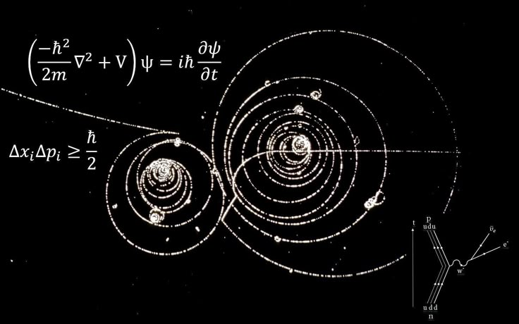
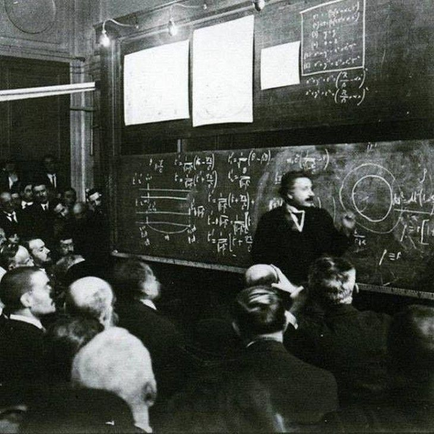

Embark on Your Quantum Journey

Introduction

Quantum Physics

Theoretical Physics

Astrophysics
Quantum physics, theoretical physics, and astrophysics together form a journey that stretches from the tiniest particles to the vastness of the universe. Quantum physics reveals the strange and often counterintuitive rules that govern matter and energy at the smallest scales, where certainty gives way to probability. Theoretical physics takes these ideas and builds them into mathematical models that explain what we see and predict what we have yet to discover. Astrophysics carries these principles into the cosmos, helping us understand the birth and death of stars, the nature of galaxies, the pull of black holes, and the origins of space and time itself. Together they form a single story of reality, connecting the hidden world of the quantum to the endless expanse of the universe.